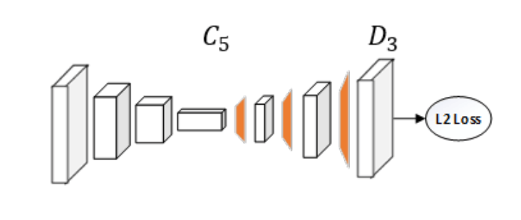

Monocular Human Pose Estimation,ONNX Models and Quantization
By VijayPrakash

Human Pose Estimation
Human Pose Estimation (HPE)— an image processing task which finds the configuration of a subject’s joints and body parts in an image.When tackling human pose estimation, we need to be able to detect a person in the image and estimate the configuration of his joins (or keypoints).
-
It represents the orientation of a person in a graphical format. Essentially, it is a set of coordinates that can be connected to describe the pose of the person. Each co-ordinate in the skeleton is known as apart (or a joint, or a keypoint).A valid connection between two parts is known as apair (or a limb). -
Formally speaking, Pose Estimation is predicting the body part or joint positions of a person from an image or a video.
"Due to cold start of Lambda, if it's taking more than a minute for first run, give a second try after 90 seconds by changing image"
Human Pose Estimation
Context
There has been significant progress on pose estimation and increasing interests on pose tracking in recent years. At the same time, the overall algorithm and system complexity increases as well, making the algorithm analysis and comparison more difficult. This work provides simple and effective baseline methods.
HPE Method: Simple Baselines for Human Pose Estimation and Tracking, this work aims to ease complexity in algorithm and architetural problem by asking question how good could a simple method be?
Feature Extraction
Feature extraction in Machine Leaning refers to the creation of derived values from raw data (such as an image or video in our case), that can be used as input to a learning algorithm. Features can either be explicit or implicit. Explicit features include conventional Computer Vision based features like Histogram of Oriented Gradients (HoG) and Scale Invariant Feature Transform (SIFT). These features are calculated explicitly before feeding the input to the following learning algorithm.
Left : Image along with corresponding color gradients, Right : Image with SIFT features
Implicit features refers to deep learning based feature maps like outputs from complex Deep Convolutional Neural Networks (CNNs). These feature maps are never created explicitly, but are a part of a complete pipeline trained end-to-end.
ResNet is the most common backbone network for image feature extraction. Our method (Simple Baselines for Human Pose Estimation and Tracking) simply adds a few deconvolutional layers over the last convolution stage in the ResNet, called C5.They adopted this structure because it is arguably the simplest to generate heatmaps from deep and low resolution features and also adopted in the state-of-the-art Mask R-CNN.

HPE Methods are categorised into 4 Methods:
1.Generative and Discriminative (3D Single Person)
The main difference between generative and discriminative methods is whether a method uses human body models or not.
2. Top Down and Bottom Up (Multi-Person)
The bottom-up approach first finds the keypoints and then maps them to different people in the image, while the top-down approach first uses a mechanism to detect people in an image, put a bounding box area around each person instance and then estimate keypoint configurations within the bounding boxes.
3. Regression and Detection Based (Single Person)
Regression - directly mapping from input images to body joint points and Detection - generating intermediate image patches or heatmaps of join-locations
4. One-Stage and Multi-Stage
One-stage : end-to-end training and Multi-stage : stage-by-stage training
Content
Here we will be using the Bottom Up Approach, i.e. we will be detecting the body parts (joints, limbs, or small template patches) and then joining them to create our human body.
Now,we will make our hands little dirty!!😜 I will be using Google Colab for running everything.
- Firstly, will start by cloning the human-pose-estimation.pytorch repository
! git clone https://github.com/microsoft/human-pose-estimation.pytorch && cd human-pose-estimation.pytorch && \
git checkout 18f1d0fa5b5db7fe08de640610f3fdbdbed8fb2f
- Add it to the sys.path so colab knows where the library is
import sys
if "/content/human-pose-estimation.pytorch/lib/" not in sys.path:
sys.path.insert(0, "/content/human-pose-estimation.pytorch/lib/")
- Import all necessary Libraries:
import io
import re
import os
import cv2
import copy
import torch
import torch.onnx
import numpy as np
import torch.optim
import torch.nn as nn
from PIL import Image
import seaborn as sns
import matplotlib.pyplot as plt
import torchvision.transforms as T
import torch.backends.cudnn as cudnn
sns.set()
Here, we are using the ResNet50 model trained on 256x256 images of the MPII Dataset, it has 16 human body points. All of the MPII models can be found here Pre-trained-pose_mpii-models-Google Drive
##Downloading the pose_resnet_50_256x256.pth.tar model:
! gdown https://drive.google.com/uc?id=1V2AaVpDSn-eS7jrFScHLJ-wvTFuQ0-Dc
##Import models and config files:
import models
from core.config import config
from core.config import update_config
from core.config import update_dir
from core.config import get_model_name
## Assigning the CONFIG_FILE and MODEL_PATH variables:
### The corresponding config file is taken from experiments folder:
CONFIG_FILE = '/content/human-pose-estimation.pytorch/experiments/mpii/resnet50/256x256_d256x3_adam_lr1e-3.yaml'
MODEL_PATH = '/content/pose_resnet_50_256x256.pth.tar'
##update the config file:
update_config(CONFIG_FILE)
config.GPUS = '' # we are running on CPU
## Load the model:
model = eval('models.'+config.MODEL.NAME+'.get_pose_net')(config, is_train=False)
model.load_state_dict(torch.load(MODEL_PATH, map_location=torch.device('cpu')))
We’ll be now using this guy’s image to detect pose. I wonder who this might be 🤔
Time to finally run the model on the image ! (ofcourse doing some image transformations first), you’ll notice something called JOINTS in below code, we’ll use those later ! they are from the MPII dataset, and our model will output those 16 human point Joints.
transform = T.Compose([
T.Resize((256, 256)),
T.ToTensor(),
T.Normalize(mean=[0.485, 0.456, 0.406],std=[0.229, 0.224, 0.225])
])
tr_img = transform(image)
output = model(tr_img.unsqueeze(0))
output = output.squeeze(0)
_, OUT_HEIGHT, OUT_WIDTH = output.shape
print(f'output shape: {output.shape}')
# helper function we will use later
get_detached = lambda x: copy.deepcopy(x.cpu().detach().numpy())
POSE_PAIRS = [[9, 8],[8, 7],[7, 6],[6, 2],[2, 1],[1, 0],[6, 3],[3, 4],[4, 5],[7, 12],[12, 11],\
[11, 10],[7, 13],[13, 14],[14, 15]]
get_keypoints = lambda pose_layers: map(itemgetter(1, 3), [cv2.minMaxLoc(pose_layer) for pose_layer in pose_layers])
JOINTS = ['0 - r ankle', '1 - r knee', '2 - r hip', '3 - l hip', '4 - l knee', '5 - l ankle', '6 - pelvis', \
'7 - thorax', '8 - upper neck', '9 - head top', '10 - r wrist', '11 - r elbow', '12 - r shoulder', \
'13 - l shoulder', '14 - l elbow', '15 - l wrist']
JOINTS = [re.sub(r'[0-9]+|-', '', joint).strip().replace(' ', '-') for joint in JOINTS]
Confidence Maps :A common way of predicting joint locations is producing confidence maps for every joint. Confidence maps are probability distribution over the image, representing the confidence of the joint location at every pixel.
plt.figure(figsize=(15, 15))
for idx, pose_layer in enumerate(get_detached(output)):
# print(pose_layer.shape)
plt.subplot(4, 4, idx + 1)
plt.title(f'{idx} - {JOINTS[idx]}')
plt.imshow(image.resize((OUT_WIDTH, OUT_HEIGHT)), cmap='gray', interpolation='bicubic')
plt.imshow(pose_layer, alpha=0.5, cmap='jet', interpolation='bicubic')
plt.axis('off')
plt.show()
plt.figure(figsize=(8, 8))
plt.imshow(image.resize((OUT_WIDTH, OUT_HEIGHT)), cmap='gray', interpolation='bicubic')
pose_layers = get_detached(output)
pose_layers = np.clip(pose_layers, 0.7, 1.0)
layer_sum = np.sum(pose_layers, axis=0)
plt.imshow(layer_sum, alpha=0.5, cmap='jet', interpolation='bicubic')
plt.axis('off')
plt.show()
That's Bottom Up HPE approach! we never detected a bounding box for the image body, just the 16 keypoints.
Postprocessing :A lot of algorithms, including both bottom up and top down approaches, do not have a relation constraint on the final output. To put it in layman terms, an algorithm predicting joint positions from an input image does not have any filter on rejecting/correcting unnatural human pose. This can sometimes lead to weird Human Pose Estimation.
To cope with this, there exist a set of postprocessing algorithms, which rejects unnatural human poses. The output pose from any Pose Estimation pipeline is passed through a learning algorithm which scores every pose based on its likeliness. Poses that get scores lower than a threshold are ignored during the testing phase.
THRESHOLD = 0.6
OUT_SHAPE = (OUT_HEIGHT, OUT_WIDTH)
image_p = cv2.imread(IMAGE_FILE)
pose_layers = get_detached(x=output)
key_points = list(get_keypoints(pose_layers=pose_layers))
is_joint_plotted = [False for i in range(len(JOINTS))]
for pose_pair in POSE_PAIRS:
from_j, to_j = pose_pair
from_thr, (from_x_j, from_y_j) = key_points[from_j]
to_thr, (to_x_j, to_y_j) = key_points[to_j]
IMG_HEIGHT, IMG_WIDTH, _ = image_p.shape
from_x_j, to_x_j = from_x_j * IMG_WIDTH / OUT_SHAPE[0], to_x_j * IMG_WIDTH / OUT_SHAPE[0]
from_y_j, to_y_j = from_y_j * IMG_HEIGHT / OUT_SHAPE[1], to_y_j * IMG_HEIGHT / OUT_SHAPE[1]
from_x_j, to_x_j = int(from_x_j), int(to_x_j)
from_y_j, to_y_j = int(from_y_j), int(to_y_j)
if from_thr > THRESHOLD and not is_joint_plotted[from_j]:
# this is a joint
cv2.ellipse(image_p, (from_x_j, from_y_j), (4, 4), 0, 0, 360, (255, 255, 255), cv2.FILLED)
is_joint_plotted[from_j] = True
if to_thr > THRESHOLD and not is_joint_plotted[to_j]:
# this is a joint
cv2.ellipse(image_p, (to_x_j, to_y_j), (4, 4), 0, 0, 360, (255, 255, 255), cv2.FILLED)
is_joint_plotted[to_j] = True
if from_thr > THRESHOLD and to_thr > THRESHOLD:
# this is a joint connection, plot a line
cv2.line(image_p, (from_x_j, from_y_j), (to_x_j, to_y_j), (255, 74, 0), 3)
Image.fromarray(cv2.cvtColor(image_p, cv2.COLOR_RGB2BGR))
It got all the 16 points ! 😲 (you can reduce the THRESHOLD if it didn’t)
Pose estimation can be classified into Single-person and Multi-person pose estimation.Single-person pose estimation (SPPE) is the easier of the two, with the guarantee of only one person present in the frame. On the other hand, Multi-person pose estimation (MPPE) needs to handle the additional problem of inter-person occlusion. Initial approaches in pose estimation were mostly focused on SPPE, however with the availability of huge multi-person datasets, the MPPE problem has lately been getting increased attention.we can use a hourglass model kind of architecture, or maybe something like YOLO does for creating different resolution(scales) representations of the image, that could help for Multi-person pose estimation in the Image.
ONNX Model
ONNX is an open format built to represent machine learning models. ONNX defines a common set of operators - the building blocks of machine learning and deep learning models - and a common file format to enable AI developers to use models with a variety of frameworks, tools, runtimes, and compilers.
- With ONNX, AI developers can more easily move models between state-of-the-art tools and choose the combination that is best for them. ONNX is developed and supported by a community of partners such as Microsoft, Facebook and AWS.
##Install onnx and onnxruntime
! pip install onnx onnxruntime
import torch.onnx
def print_size_of_model(model):
torch.save(model.state_dict(), "temp.p")
print('Size (MB):', os.path.getsize("temp.p")/1e6)
os.remove('temp.p')
def print_size_of_onnx_model(model):
onnx.save(model, 'temp.onnx')
print('Size (MB):', os.path.getsize("temp.onnx")/1e6)
os.remove('temp.onnx')
##PyTorch model size:
print_size_of_model(model)
OUTPUT: Size (MB): 136.330065
- With onnxruntime we can do only inferencing, but with tensorflow.js can do both training and inferencing in the browser.
# Input to the model
torch_model = new_model
batch_size = 1
x = torch.randn(batch_size, 3, 256, 256, requires_grad=True)
torch_out = torch_model(x)
# Export the model
torch.onnx.export(torch_model, # model being run
x, # model input (or a tuple for multiple inputs)
"simple_pose_estimation.onnx", # where to save the model (can be a file or file-like object)
export_params=True, # store the trained parameter weights inside the model file
opset_version=10, # the ONNX version to export the model to
do_constant_folding=True, # whether to execute constant folding for optimization
input_names = ['input'], # the model's input names
output_names = ['output'], # the model's output names
dynamic_axes={'input' : {0 : 'batch_size'}, # variable lenght axes
'output' : {0 : 'batch_size'}})
onnx_model = onnx.load("simple_pose_estimation.onnx")
onnx.checker.check_model(onnx_model)
print_size_of_onnx_model(onnx_model)
OUTPUT : Size (MB): 135.910897
Now we’ve successfully converted our model to ONNX
Quantization
-
Reducing network size by means of compression, encoding and so on. Quantization is one of the most widely adopted compression methods.
-
Quantization itself, conceptly, converts floating-point arithmetic of neural networks into fixed-point, and makes real time inference possible on mobile phones as well as benefits cloud applications.
Quantization process can be divided into two parts:
1.Converting model from FP32 to INT8, and
2.Inferencing with INT8.
Training with Quantization:
learn ranges during training
forward pass - quantized values
backward pass - float values
A question you might have in your mind is, why not use the PyTorch’s Quantization ?
The models we have right now cannot be quantized, only a few very special models can be like BERT, LSTM, or else we have to modify our model and add some special layers.
import onnx
from onnxruntime.quantization import quantize
from onnxruntime.quantization import QuantizationMode
quantized_model = quantize(onnx_model, quantization_mode=QuantizationMode.IntegerOps, static=False)
onnx.save(quantized_model, 'simple_pose_estimation_quantized.onnx')
print_size_of_onnx_model(quantized_model)
OUTPUT: Size (MB): 65.620732
Did you see that ? the model is half the size now ! although this comes with a caveatâš ï¸ that the accuracy is reduced.
Running the model on ONNX Runtime:
import onnxruntime
ort_session = onnxruntime.InferenceSession("simple_pose_estimation_quantized.onnx")
def to_numpy(tensor):
return tensor.detach().cpu().numpy() if tensor.requires_grad else tensor.cpu().numpy()
# compute ONNX Runtime output prediction
ort_inputs = {ort_session.get_inputs()[0].name: to_numpy(tr_img.unsqueeze(0))}
ort_outs = ort_session.run(None, ort_inputs)
ort_outs = np.array(ort_outs[0][0]) # to get 16x64x64 output
- Look at the size (65.6 MB)! its teeny-tiny for cpu, for my current deployment i was using torch-1.6.0 and torchvision-0.7.0 which took over 500MB uncompressed. something i can’t afford in AWS Lambda free tier. Now that i have the ONNX model and a really small runtime, everything will fit in a single free Lambda runtime and independent upon PyTorch libraries !!
If you have any doubts in the article, feel free to comment on your queries. I will be more than happy to help. I am also open to suggestions and feedbacks.Happy learning!!!